2023年北京中考数学 第24题 解析
24. 如图，圆内接四边形 的对角线
的对角线 ，
， 交于点
交于点 ，平分
，平分 ，
， ．
．
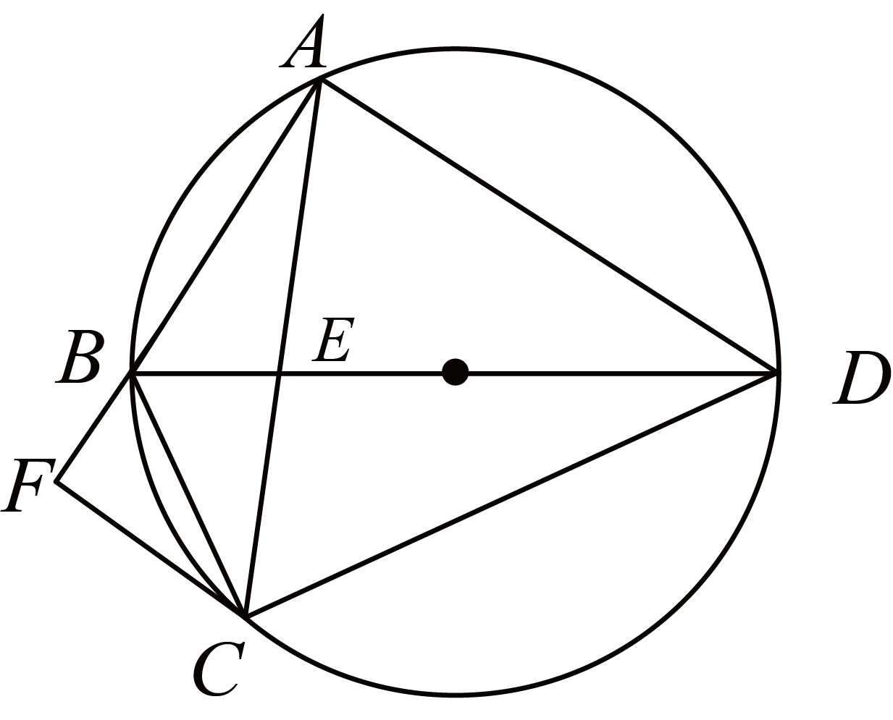
（1）求证 平分
平分 ，并求
，并求 的大小；
的大小；
（2）过点 作
作 交
交 的延长线于点
的延长线于点 ．若
．若 ，
， ，求此圆半径的长．
，求此圆半径的长．
【答案】（1）见解析，
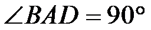
（2）
【解析】
【分析】（1）根据已知得出
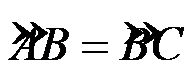
，则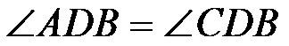
，即可证明平分，进而根据平分，得出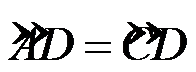
，推出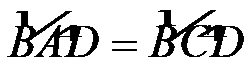
，得出是直径，进而可得；（2）根据（1）的结论结合已知条件得出，
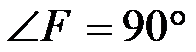
，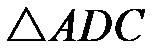
是等边三角形，进而得出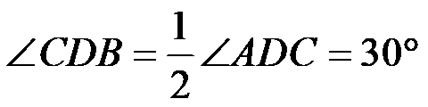
，由是直径，根据含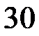
度角的直角三角形的性质可得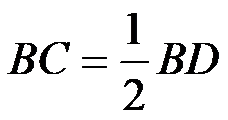
，在中，根据含度角的直角三角形的性质求得 的长，进而即可求解．
的长，进而即可求解．【小问1详解】
解：∵
∴，
∴，即平分．
∵平分，
∴
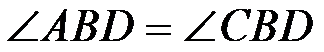
，∴，
∴
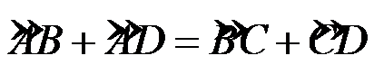
，即，∴是直径，
∴；
【小问2详解】
解：∵，，
∴
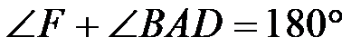
，则．∵，
∴．
∵，
∴，
∴是等边三角形，则
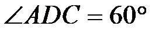
．∵平分，
∴．
∵是直径，
∴
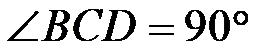
，则．∵四边形是圆内接四边形，
∴
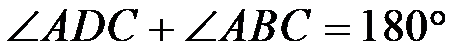
，则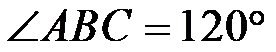
，∴
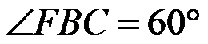
，∴
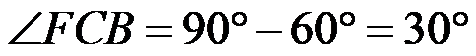
，∴
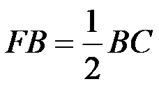
．∵，
∴
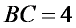
，∴
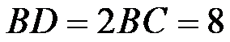
．∵是直径，
∴此圆半径的长为
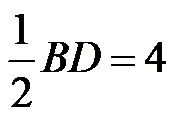
．【点睛】本题考查了弧与圆周角的关系，等弧所对的圆周角相等，直径所对的圆周角是直角，含度角的直角三角形的性质，等边三角形的性质与判定，圆内接四边形对角互补，熟练掌握以上知识是解题的关键．